组合布局
统一 TFT+LED 显示载体下的方案原型与场景交互布局规则，确保不同品类、不同屏幕形态下的信息呈现清晰且体验一致。
01
横向布局示例
垂直居中对称型
A. 屏幕可触控，电源与启停按键聚合于中心区域
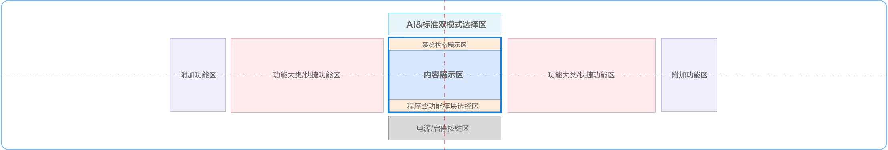
B. 屏幕可触控，电源与启停按键置于右侧
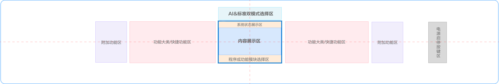
C. 屏幕不可触控,屏幕交互按键区聚合于中心区域，电源与启停按键置于右侧
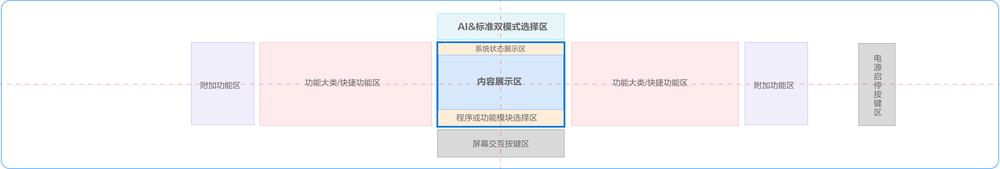
整体右侧型
A. 屏幕垂直居中，屏幕可触控,电源与启停按键聚合于中心区域
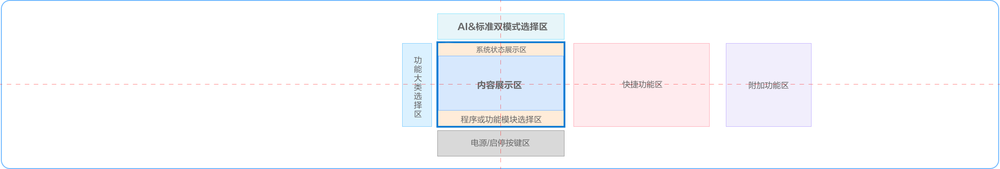
B. 屏幕垂直居中，屏幕可触控,电源与启停按键置于右侧
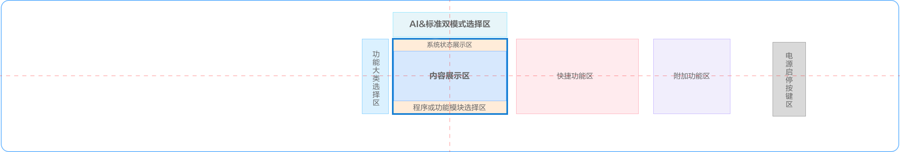
C. 屏幕垂直居中，屏幕不可触控，屏幕交互按键区聚合于中心区域
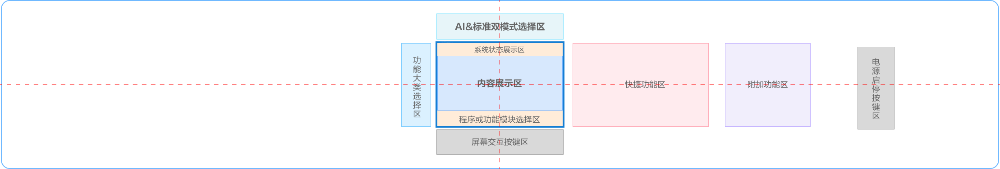
02
竖向布局示例
屏幕可触控
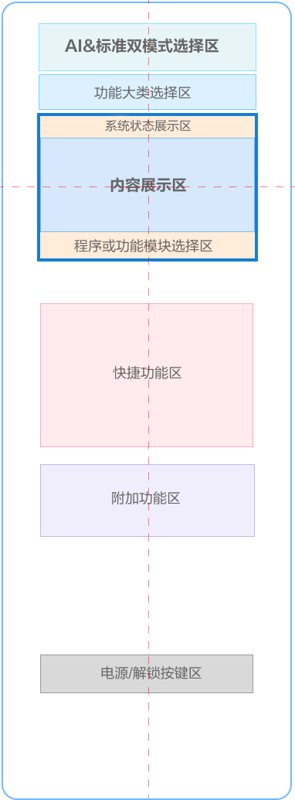
屏幕不可触控
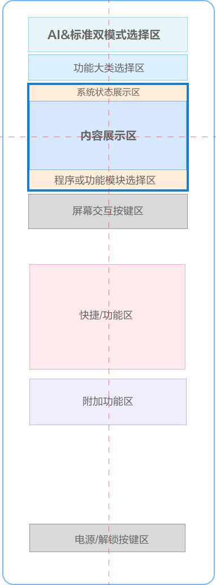
01
横向交互示例
居中对称型
A. 屏幕可触控，电源与启停按键聚合于中心区域
B. 屏幕可触控，电源与启停按键置于右侧
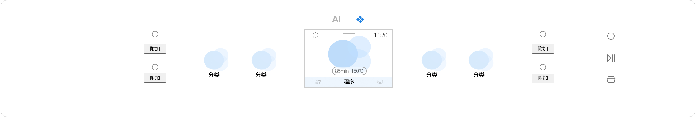
C. 居中对称型-屏幕不可触控
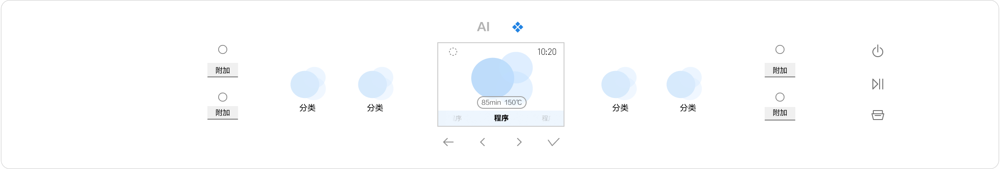
整体右侧型
A. 屏幕垂直居中，屏幕可触控，电源与启停按键聚合于中心区域
B. 屏幕垂直居中，屏幕可触控，电源与启停按键置于右侧
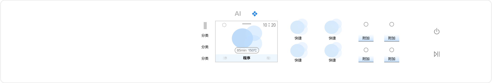
C. 屏幕垂直居中，屏幕不可触控，屏幕交互按键区聚合于中心区域
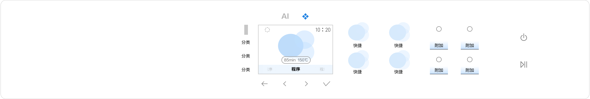
屏内代表画面原型
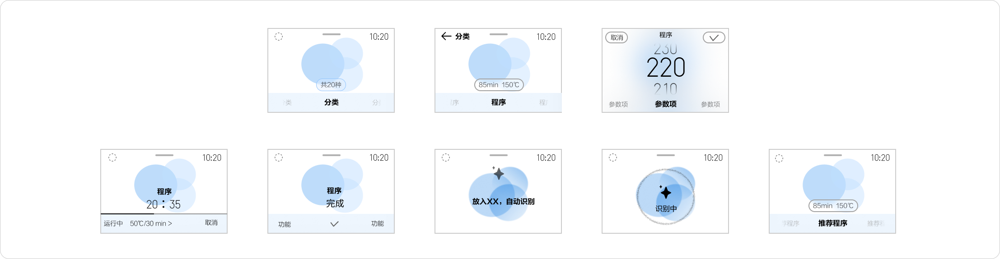
02
竖向交互示例
屏幕可触控
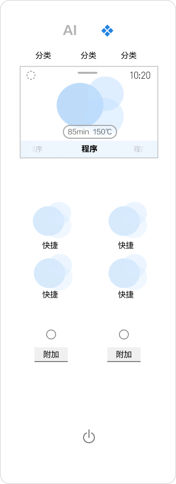
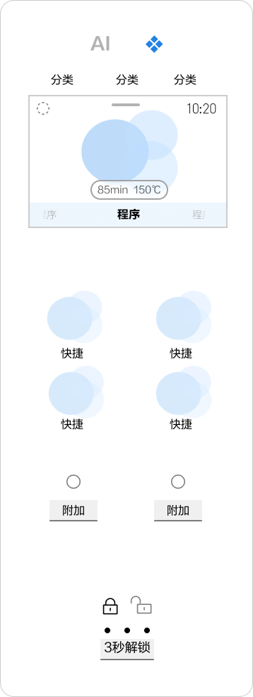
屏幕不可触控
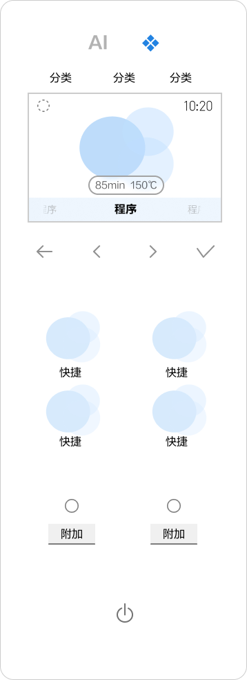
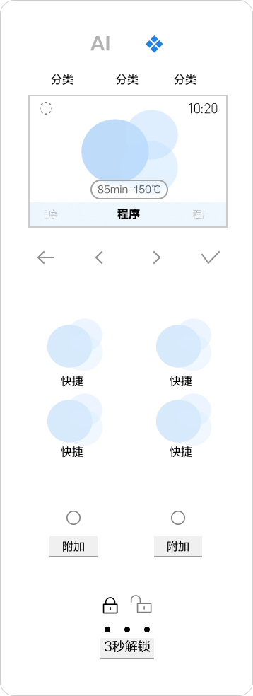